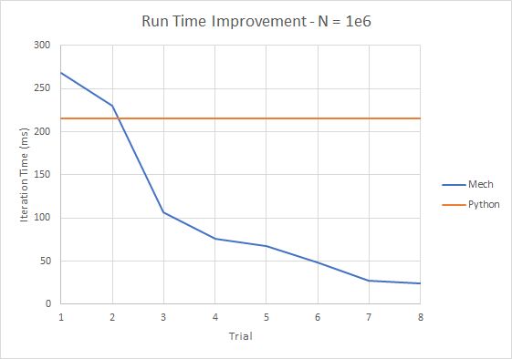
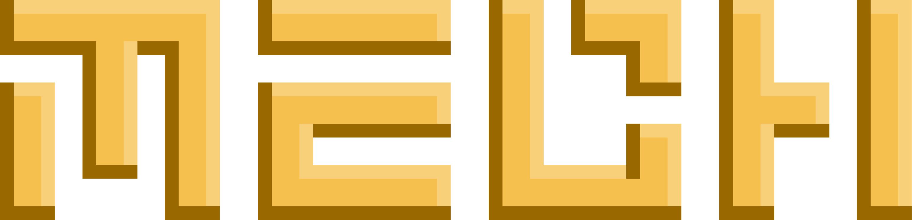
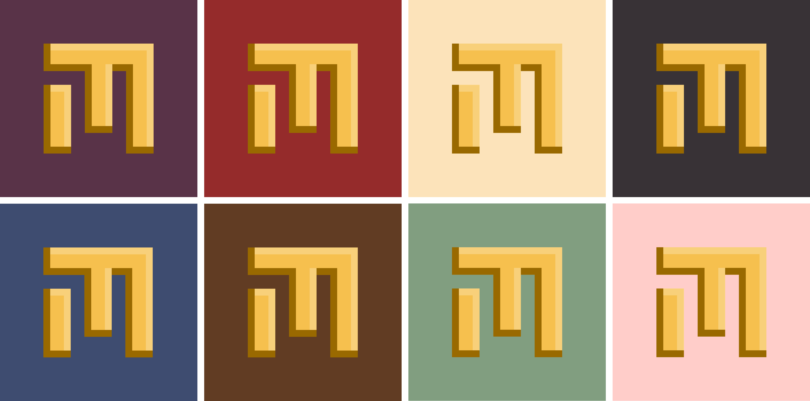

Hello everyone and Happy New Year! Mech changed a lot in 2021 -- so much that it's almost ready for its first beta release in 2022. Development of the Mech language has been relatively underground lately, causing some to wonder if the project was dead. Mech is very much alive, but I've been quiet about it since the pandemic started. The last time I spoke publicly about Mech was at Live 2019 in October of that year. If you are new to Mech, the 2019 paper is a good place to learn about the basics of the language.
Since then, Mech has been rewritten a couple times, and I think it's finally almost in a state that is ready for public consumption in 2022. Therefore, I plan to be a lot more public about Mech this year in order to get the word out. To that end, let's take a look at what has happened to Mech in the last couple of years, and where it's headed in 2022.
People
I wanted to start by thanking everyone who has been involved with the Mech project. First, thank you to the 2020 Mountaintop Summer Experience group: Allison Codi, Zack Coriarty, Thanos Kougionis, and Sarah Pontier, who worked on the Forward Robotics initiative. They developed a curriculum that incorporates Mech and Sphero robots into fun learning activities for middle school students. You can learn a little more about their work here.
Also thanks to my 2021 Lehigh CSE Capstone team: Nic Campion, Sean Hong, Sherry Huang, Dave Jha, and Ronan Leahy. Sean, Dave, and Ronan worked to stress test Mech by implementing classic arcade games. Serry and Nic worked on scripting the Mech CI/CD pipeline. You can see their final capstone presentation here.

Photo Caption: The 2021 Mechanics at the Lehigh University Capstone Demo Day.
Finally, there are several other students who have been involved and helped in various ways (too many to list) including Mika Kizuka, Robin Maillard, Michalina Modzelewska, Alan Wang, and Brian Zhu. Thank you for all your help with Mech these couple of years, it's been fun working on this project with you, and I hope you'll continue to be involved in the future!
And for anyone else I may have missed, I'm sorry, but thank you too!
Project Status
Mech is currently at the alpha stage of development. My general strategy has been one of breadth as opposed to depth -- implement at least a first-cut on as much of the Mech platform as possible, and then iterate. Mech is almost at the point where at least some part of every part of the platform has been implemented. However, there are still some aspects that remain unimplemented, so the project will persist at the alpha stage until the outstanding components are added (I'll talk about them in the roadmap section at the end of this post). My current target for completing the work necessary to release Mech v0.1-beta is October of this year.
2021 TL;DR
The topline Mech features that were added or enhanced in 2021 were:
- Implemented a distributed, parallel, asynchronous runtime (WIP)
- Enhanced Module system added with a package manager and a foundational standard library (WIP)
- Added new example Mech games implemented using enhanced drawing and events capabilities (WIP).
Parallel, Asynchronous, Distributed Runtime
The bulk of 2022 was spent on a runtime rewrite that leverages data parallelism where possible, which is now mostly in place. This rewrite started as an attempt to take performance of Mech programs more seriously. In the figure below, you can see the results of some benchmarking I did of the bouncing balls game versus a Python implementation:
Initially Mech performed much worse than Python, but after some tuning guided by the excellent Superluminal Profiler, I managed to get about a 10x performance gain (from 3Hz to 40Hz for N=1e6). Not bad, but I was bitten by the optimization bug at this point, and I couldn't see a way to improve performance further without a big rewrite to leverage the inherent parallelism of this problem.
Parallel
In this benchmark, N refers to the number of balls being simulated. For instance, consider the following block:
~ #time/timer.tick #ball.x := #ball.x + #ball.vx #ball.y := #ball.y + #ball.vy #ball.vy := #ball.vy + #gravity
Operators and functions work element-wise in Mech, so this block represents 3N addition and assignment operations. There is a lot of inherent parallelism that can be exploited here! The new runtime changes Mech in several ways in recognition of this.
First, table columns are now typed. This means that instead of accepting a `Value` enum that can be anything, column entries must be homogenous. This allows the Mech compiler to take advantage of automatic vectorization that enables parallelism when appropriate. You can see the result of that in the figure below, showing the execution of the bouncing balls program:

Now instead of running at ~40Hz, the program runs at over 200Hz. This is not *quite* a fair comparison, because the machines are different. I'll have to do a fairer comparison later, but another order of magnitude improvement isn't unreasonable given how much vectorization we can now leverage.
Second, this also means that we can automatically parallelize most built-in operators beyond what the Rust compiler manages. Below are the results of using the Rayon work-stealing parallelism crate for Rust:

This yields a 64% percent speedup over the standard iterators, and we can see that CPU utilization is at 100%. Unfortunately, there is some overhead associated with the use of the Rayon crate such that it's not beneficial unless N exceeds a threshold. Potentially what we can do here is switch between regular or parallel iterators depending on how large the operands are, but this is a work in progress.
Asynchronous
Work started on scheduling blocks to asynchronously execute within a core. Consider a file I/O operation, such as opening a file to read the contents:
#file/read += [path: "myfile.txt"]
We can then use the file contents when they are available:
#x = #file/read.contents
Mech will automatically make sure the variable #x is updated when the contents become available. What's cool is that any kind of I/O operation works this way, including HTTP requests.
One very interesting possibility this opens is the ability to offload computations to other hardware, like a GPU. Running a computation on a GPU is often considered an asynchronous operation, because data must be written to and from the GPU's main memory. Therefore, we began investigating the possibly of offloading these computations onto one or more GPU (again, very much a WIP).
Distributed
Work finally began on making the Mech runtime distributed, which enables the ability to write multiplayer games. For instance, consider a game of pong, seen below:
The game is architected as a client-server network, but Mech allows for any custom topology. In this case two game clients (the players) connect to a centralized game server. The clients are responsible for rendering the game state to the players' screens (the score, positions of the two paddles and the ball), as well as sending player commands to the game server. The server receives player inputs and adjusts the positions of the paddles accordingly, moves the ball, detects collisions between the ball and paddles, and updates the score.
The way this works is that each node of the network is running an isolated Mech core. Loaded onto each core is code that depends on tables defined in one or more of the other nodes in the network. When the network is initialized, each node shares with the others what it consumes and produces. The other nodes communicate their needs as well, and message channels are established to satisfy the requirements of the network. This is shown more clearly in the demonstration below:
The left window is a Mech core serving the following code on a websocket (notice the Hex literal; those are new):
#pacman/fill = 0x00FF00
The middle window is a Mech core serving the following code (and more) on an HTTP server:
#pacman/drawing = [
parameters: [
stroke: 0x000000
fill: #pacman/fill
line-width: 3
]
The right window is a browser that connects to the HTTP server. It receives the above code, but it can't render the Pacman drawing until `#pacman/fill` is satisfied. It connects via a websocket to the Mech core running in the left window, and it requests the missing table. The missing table is sent to the client, which then draws the green Pacman to the screen. Finally, the window is duplicated, demonstrating that the programs are rendered independently client-side, even though they communicate with a centralized server to receive the Pacman color, all interactions and updates are performed locally.
A Module System for Mech
Mech gained a module system in 2020, including a package manager and machine directory. In 2021, we spent some time laying the groundwork for the standard library, which in Mech is called the standard machine.
Machines
Many programming languages use libraries as units of published code suitable for consumption by third parties. They are typically linked to by a program to access added functionality, usually in the form of callable library functions. However, libraries usually are not considered as an idiomatic way to distribute data for computation within a program; usually this is accomplished through a file, database connection, HTTP request, or any number of ways. But usually not libraries.
In Mech, machines are conceptually similar to libraries in that they are units of published Mech code. But machines are a little different; they provide added functionality in the form of tables and functions, but they also can contain data. Therefore, you could use a machine to distribute code as you would using a library, data as you would using a file/database, or even both at the same time! Therefore, I felt it was appropriate to name them something other than "modules" or "libraries".
Package Manager
Mech also got a package manager in 2020, which downloads machines as they are needed. Required packages are identified when a Mech program is compiled and loaded. Let's use the `math/sin()` function as an example. A program can use the function in a block like so:
#x = math/sin(angle: y)
When this program is loaded, it will report to the runtime that the `math/sin()` function is required, yet unavailable. The runtime will consult the directory for the an entry labeled "math", and if it's there it will download the associated machine to the projects `/machines` directory. Machines come in two varieties: dynamic library or native Mech. Machines can be wrapped functions from other languages like Rust. In this case, we are leveraging the built-in `sinf()` function for Rust, which is compiled into to shared/dynamic libraries and linked at runtime to access the provided function.
Right now imports are implicit, but this could be changed to make it explicit. Packages can currently be added by submitting a pull request to the directory repository, but in the future this will probably be handled by a native Mech server.
The Standard Machine
The standard Mech machine is the collection of 1st party machines which represent the basic Mech platform. In 2021, we added the following machines:
- http - send HTTP requests
- file - read and write files
- html - react to HTML events and draw HTML elements
- io - write to stdout, will probably handle general IO events in the future
- mech - introspect the compiler, compile mech blocks
- string - manipulate strings
- random - generate random numbers
- system - exit programs
The goal was to get these machines started, so they don't provide a lot of functionality right now. In 2022 we will add more machines, and the flesh out existing ones.
Testing Harness
Native testing capabilities were also enhances in 2021. For now, most testing of core components is done in the `syntax` repository. But this can only test core components, not machines, which are loaded by the `program` repository.
This is solved by the native Mech testing harness, which also is a good integration test for verifying the whole system works. The testing machine is quite simple: it runs a test and compares it to the expected results:
Define the test table
#mech/test = [|name expected actual result|]
Compares the expected and actual results of the test table
#mech/test.result := #mech/test.expected == #mech/test.actual
A test would be defined as follows
#mech/test += ["Add test", 2, 1 + 1]
Or more explicitly
#mech/test += [
name: "Less-than test"
expected: true
actual: 3 < 5
]
The test can be invoked:
> mech test my-tests.mec
You can see the results of the testing harness here, which are reproduced below:
> mech test tests
[Testing]
[Loading] tests/math.mec
[Downloading] https://gitlab.com/mech-lang/machines/mech/-/raw/main/src/test.mec
[Compiling] Compiled 11 blocks.
[Running]
[Mech Test] [Downloading] Updating machine registry.
[Mech Test] [Downloading] math v0.0.1
[Mech Test] Running 9 tests...
Add quantities ok
Subtract quantities ok
Multiply quantities ok
Divide quantities ok
Exponentiate quantities ok
math/sin() ok
math/cos() ok
math/round() ok
math/floor() ok
Test result: ok | total 9 | passed 9 | failed 0 |
Drawing and New Example Games
The final major area of development in 2021 was on the HTML machine, which received far more attention than any other. Currently, the HTML machine (which is hosted here, but all of the machinery exists in the wasm repository. This needs to be refactored, but I can't deal with that quite yet.)
The new games are:
You can see some a demo of the Asteroids game below:

To run any of these demos, clone the examples repository, and then run a new server. For instance:
> mech serve examples/src/asteroids
Then connect to `localhost:8081` from a web browser (or whatever address:port combination you use when launching the mech server).
My favorite thing about these examples is that they were written by my students, and they probably represent the first serious Mech programs written by anyone who is not me. So that's a big milestone right there, even if they weren't organic (that will be the next milestone: when someone writes a serious Mech program uncoerced).
The purpose of writing these games was to stress test Mech to reveal weak points in the language design, and boy did we find weak points. The games themselves are incomplete due to limitations identified during development, and changes will be made in the coming months to address those issues. When that's done, I will do a rewrite of these games to make them a little more idiomatic.
Another thing about these programs is that the students who wrote them did not have any real training in Mech, and they didn't have the benefit of any error messages when writing this code. Usually syntax errors or logic errors would result in the program just not working at all, with no indication of what went wrong. Despite this, these students managed to write fully working games. I'm very impressed at this, and honestly I don't know how they managed to accomplish what they did.
Other Ecosystem Enhancements
The Mech ecosystem was enhanced in other various was throughout 2021.Logo Revamp
The Mech logo was revamped to be a little more interesting. The logo was created by the community -- I presented different variations of the M E C H letters and the community voted on the ones you see here:
The logo went through a second revision more recently to give it a different vibe -- I'm going for a 70s palette meets 90s GUI aesthetic. The Mech ethos is very reflective of programming language designs that bloomed in the 70s, including languages like Prolog, Matlab, Smalltalk, and Lucid by Bill Wadge and Ed Ashcroft, Lucid was actually the main inspiration that kicked off my journey with Mech).
But I am a child of the 90s, so the GUI aesthetic of that time is dear to me. So this is where we are with the logo now:
And the color palette:
I'm not a designer or anything, but I think it looks good!
Number Literals
Number literals are now supported:
- Hex: `0xABC123`
- Binary: `0b101010`
- Octal: `0o12345670`
- Decimal: `0d1234567890`
I started investigating rational numbers as well, which can be parsed, but they don't do anything yet.
EBNF Grammar
Several students wrote an EBNF grammar for Mech by carefully translating the parser.
Here's a taste of the grammar for Mech tables:
table = hashtag, identifier;
binding = identifier, ": ", empty | expression | identifier | constant, space, [comma], space;
function_binding = identifier, colon, space, empty | expression | identifier | constant, space, [comma], space;
table_column = {space | tab} , true_literal | false_literal | empty | data | expression | rational_number | number_literal | quantity, [comma], {space| tab};
table_row = {space | tab}, {table_column}, [semicolon], [newline];
attribute = identifier, space, [comma], space;
table_header = bar , {attribute}, bar, space, [newline];
anonymous_table = left_bracket, space, [table_header], {table_row}, right_bracket;
anonymous_matrix = left_angle, space, [table_header], {table_row}, right_angle;
inline_table = left_bracket, {binding} , right_bracket;
Unicode Support
Unicode characters as contained in the following block can now be parsed:
y̆és = 😃 + 1
The Mech compiler toolchain, called `mech`, gained a lot of functionality in 2020 and 2020. Currently it supports the following subcommands:
- build - compiles one or more `.mec` files into a single `.blx` file, which contains the compiled block code.
- run - compiles and runs one or more `.mec`/`.blx` files. Compiler artifacts are not retained, but downloaded machines are cached.
- test - downloads and runs the Mech testing harness on the supplied `.mec`/`.blx` files.
- serve - Hosts a Mech core on HTTP server.
Running `mech` without any subcommand opens the Mech REPL.
Mech in 2022
This year is going to be very big for Mech. Here's what I think the year will look like:
- I am targeting IROS 2022 as the venue at which to release Mech v0.1-beta. That would be the week of 10/23. The paper submission deadline is 3/1. I'll have a preprint of the submission on this blog at that time. Acceptance is announced on 6/30.
- If I'm not accepted there, I can maybe target a workshop.
- A second venue to target is SPLASH 2022. The conference is the week of 11/14, and the submission deadline there is 4/15, so there's a little more time to get a paper in.
- Oliver Walsh, a Master's student in our department will be joining me next semester for an independent study related to Mech. We'll have to see exactly what he will be working on, but there are a lot of options.
- Hopefully in a few weeks we'll be getting a new group mechanics from the capstone project. They will be involved with this project during the 2022 Spring and Fall semesters.
- Now that we may be able to hold a Mountaintop Summer Experience in person, the Forward Robotics curriculum can perhaps finally get off the ground. It would be good to put Mech in front of some younger students, but that is still a ways off (although I'm very encouraged by the experience of my capstone students).
- Finally in July I plan to apply for an NSF CAREER grant. This could really change things, as it would be the first time real money is behind the Mech project.
Topline Features to Implement in 2022
- Implement the B2T2 spec to make sure the table API is complete.
- Integrating typed columns with the parser is the next priority.
- Finishing the block scheduler is next, so that Mech is reactive again.
- Next I'd like to flesh out the distributed runtime.
- New website written 100% in Mech
- New editor written 100% in Mech
- Mech running on the Hivecar via Hivemind
This represents a very busy year for Mech, so I'm not sure how much of this we will be able to get done. A year seems like a long time, but this year I have more help than ever, so it may be doable. My New Year's resolution is to spend less time working on the runtime this year so I have more time to spend on docs and the blog. I hope you'll follow along!
Getting Involved
The best way to contribute to Mech at this stage is to write Mech code, and to contribute to discussions and brainstorming. The code is changing rapidly enough that it doesn't make sense to contribute there -- if you want to contribute to the Mech platform proper, it's best to wait until the v0.1-beta release later this year.
If you'd like to join our Slack community, you can use this link until 1/20. You can also send me an e-mail at corey@mech-lang.org, I'd love to chat.
Metrics
I'm going to start keeping track of some key project metrics each year:
#github-stars = [|year stars|
2018 2
2019 31
2020 56
2021 91]
#machines = [|year count|
2020 3
2021 11]
#commits = [|repository 2020 2021|
"core" 1325 1846
"syntax" 1065 1360
"program" 150 232
"mech" 342 487
"utilities" 53 93
"examples" 20 195
"wasm" 273 345
"assets" 23 29]
#loc = [|repository 2021|
"core" 3906
"syntax" 3346
"program" 971
"mech" 887
"utilities" 144
"wasm" 1234]
#docs = [|type count|
"reference" 17
"discussion" 6
"tutorials" 1
"examples" 11]
#docs/examples-loc = [|year loc|
2021 1351]
#community = [|year members|
2021 28]
Summary Statistics
#loc/total = stats/sum(column: #loc) #loc/budget = 10000 #loc/remaining = #loc/budget - #loc/total #commits/total = stats/sum(column: #commits)